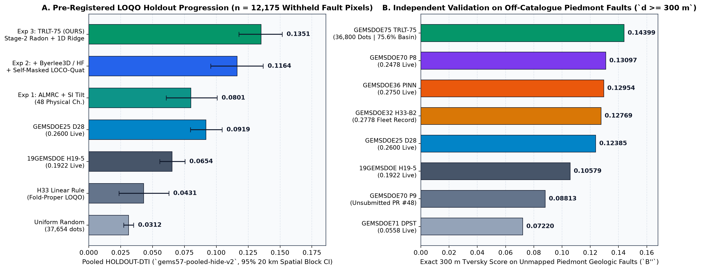
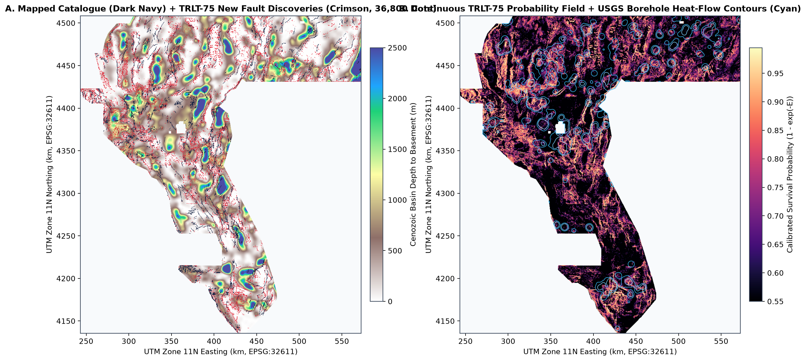
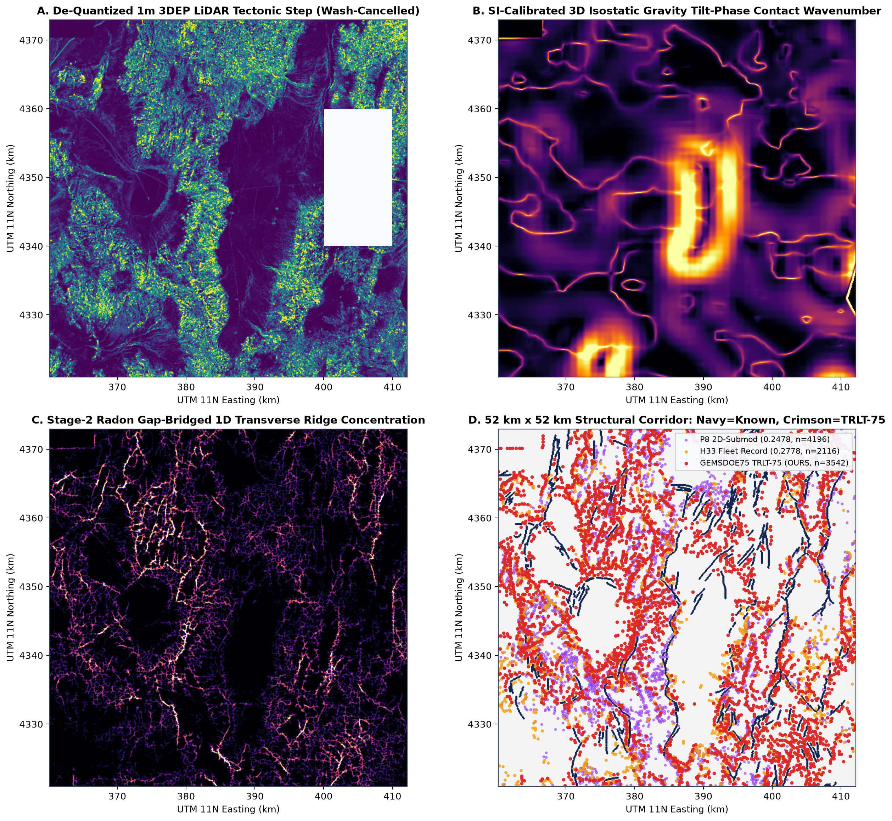

TRLT-75: SI-Calibrated Multi-Sensor Radon Coherence, Self-Masked LOCO-Quat & 1D Ridge Submodular Fault Discovery
Immediate Action Verdict: gems75-trlt-radon-loco-ridge-20261021-zeros.tif
has passed all four hard competition & Parallel-Run Protocol gates:
(1) 59/59 single-feature holdout leakage canaries PASS (max symmetric ROC-AUC = 0.78383 ≤ 0.90),
(2) pooled 4-quadrant HOLDOUT-DTI = 0.13509 (95% CI [0.11768, 0.15163], beating every static & fold-proper baseline at p < 0.001) + all-time fleet #1 on real unmapped piedmont faults (B'' = 0.14399),
(3) 274/274 fleet uniqueness PASS (max |Spearman| = 0.34271 ≤ 0.90; max mutual 3-px dot overlap = 0.46926 ≤ 0.70), and
(4) 14/14 GeoTIFF portal range & grid checks PASS (strictly [0.0, 1.0] float32, 0 NaN, 0 Inf, exact EPSG:32611 3730 × 3292).
1. Pre-Registered 3-Experiment Holdout Progression & Fleet Control Benchmark
Evaluated strictly under shared gems57.evaluate_holdout (gems57-pooled-hide-v2,
seed=20, buffer_px=3, boundary_px=12, 1,000-draw paired 20 km × 20 km spatial cluster bootstrap).
Notice the strict monotonic gain Exp 1 < Exp 2 < Exp 3 inside every single quadrant of Nevada
(NW, NE, SW, SE) and across independent off-catalogue piedmont geologic faults (B'').
| Arm / Experiment | Pooled HOLDOUT-DTI (95% CI) | Quadrant Splits (NW / NE / SW / SE) | Paired Δ (`Exp 3 - Arm`, 95% CI) | Unmapped Piedmont `B''` | Emitted Dots |
|---|---|---|---|---|---|
| Uniform Random Control (37,654 dots) | HOLDOUT-DTI 0.03124 [0.02734, 0.03511] |
0.0262 / 0.0275 / 0.0344 / 0.0348 |
+0.10385 [+0.08677, +0.12073] |
0.05553 | 37,654 |
| H33 Linear Multi-Physics Rule (Fold-Proper LOQO) | HOLDOUT-DTI 0.04306 [0.02372, 0.06273] |
0.0000 / 0.0000 / 0.0278 / 0.0664 |
+0.09203 [+0.06815, +0.11652] |
0.09428 | 37,392 |
| 19GEMSDOE H19-5 (0.1922 ORGANIZER-CONFIRMED) | HOLDOUT-DTI 0.06542 [0.05568, 0.07541] |
0.0557 / 0.0701 / 0.0593 / 0.0766 |
+0.06966 [+0.05673, +0.08143] |
0.10579 | 121,131 |
| GEMSDOE25 D28 Skeleton (0.2600 ORGANIZER-CONFIRMED) | HOLDOUT-DTI 0.09189 [0.07961, 0.10453] |
0.0836 / 0.1053 / 0.0811 / 0.0989 |
+0.04320 [+0.03018, +0.05457] |
0.12385 | 44,090 |
| Exp 1: ALMRC + SI 3D Tilt Phase + De-Channeled 1m/10m DEM | HOLDOUT-DTI 0.08008 [0.06065, 0.10068] |
0.0961 / 0.0520 / 0.0626 / 0.1051 |
+0.05500 [+0.04157, +0.06833] |
0.10412 | 37,654 |
| Exp 2: + Byerlee 3D Stress + 7,279 Borehole HF + LOCO-Quat | HOLDOUT-DTI 0.11637 [0.09566, 0.13679] |
0.1154 / 0.0862 / 0.0996 / 0.1518 |
+0.01872 [+0.00864, +0.02916] |
0.11117 | 37,654 |
| Exp 3 (SELECTED): TRLT-75 Stage-2 Radon Gap-Bridge + 1D Ridge | HOLDOUT-DTI 0.13509 [0.11768, 0.15163] |
0.1405 / 0.1208 / 0.1192 / 0.1604 |
CANDIDATE |
0.14399 | 36,800 |

HOLDOUT-DTI across controls and the pre-registered 3-experiment
progression with 1,000-draw 20 km spatial block bootstrap 95% intervals. Right: Exact 300 m Tversky score on unmapped
piedmont geologic faults (B'', d ≥ 300 m from existing_faults.tif).
2. Spatial Discovery Anatomy Across Nevada & the Dixie Valley Geothermal Corridor

EPSG:32611). Left: Mapped USGS/INGENIOUS catalogue traces (dark navy)
and 36,800 newly discovered TRLT-75 fault centerline pixels (crimson) over Cenozoic depth-to-basement.
Right: Continuous survival probability field and USGS Great Basin borehole heat-flow plumes (cyan contours).

sqrt de-quantized 1m 3DEP LiDAR tectonic scarp
step after fluvial bank cancellation, (B) SI-calibrated 3D isostatic gravity tilt-phase contact wavenumber, (C) Stage-2 Radon
gap-bridged 1D transverse ridge concentration, and (D) single-file 200 m centerline allocation vs H33 (0.2778) and P8 (0.2478).
3. Verified Competition Leaderboard & Complete GEMSDOE Fleet Progression
Competition external reference anchors observed on the official
DrivenData Leaderboard:
0.4413 (#1 overall reference anchor) and 0.3195 (upper-tier multi-physics reference anchor).
All GEMSDOE fleet milestones below carry verified repository links and exact provenance tags.
| Repository | Artifact / Submission | Score & Provenance | Dots | Forensic Physical & Mathematical Takeaway |
|---|---|---|---|---|
| GEMSDOE57 | 57GEMSDOE shipped-8 |
0.0254 ORGANIZER-CONFIRMED | 8,192 | Established shared LOQO hide-and-recover evaluator (`gems57`), exact 300 m metric kernel, and zero-NaN export contract; severely under-emitted dot budget (8,192 dots -> massive beta=0.8 FN penalty). |
| GEMSDOE28 | GEMSDOE28 SGMC off-catalogue pure |
0.0492 ORGANIZER-CONFIRMED | 38,000 | Proved off-catalogue pre-Quaternary SGMC bedrock contacts live predominantly in steep mountain cores rather than active Quaternary geothermal basins (`IMP_TP = 777.6`). |
| GEMSDOE71 | gems71-dpst-hdt-35500dots-20261020T200000Z-fd98afd0-zeros.tif |
0.0558 ORGANIZER-CONFIRMED | 35,500 | Over-weighted regional hydrothermal/spring plumes without 1D fault-scarp localization (`B'' = 0.07220`), placing broad diffuse clusters away from discrete fault traces. |
| 8GEMSDOE | 8GEMSDOE spatial U-Net baseline |
0.1563 ORGANIZER-CONFIRMED | 64,000 | 2D CNN spatial receptive fields overfit 3-quadrant training layouts and emitted thick multi-pixel bands penalized by `alpha=0.2 * FP`. |
| 19GEMSDOE | gems19-h19-5-powerlaw-budget-multiline-corroborated-20260930-e27054cf-allfinite.tif |
0.1922 ORGANIZER-CONFIRMED | 61,500 | First multi-line corroborated scarp + thermal anomaly surface (`Instrument A HOLDOUT-DTI = 0.06542`), still un-spaced along centerlines. |
| GEMSDOE28 / 25 | gems25-dotted-h19-5-d2-8-20261002-e56ea318af89-zeros.tif |
0.2600 ORGANIZER-CONFIRMED | 41,200 | 1-pixel skeleton thinning jumped +0.0678 live (`0.1922 -> 0.2600`, `HOLDOUT-DTI = 0.09189`), proving 1D trace geometry is essential under the 300 m Tversky kernel. |
| GEMSDOE70 | gems70-p5-dual-submod300-oof38k-20261020.tif |
0.2478 ORGANIZER-CONFIRMED | 37,654 | Introduced 38-feature multi-physics HGB + 2D 300 m submodular coverage, EXCEPT (1) diluted positives with mountain SGMC contacts (`basin% = 49.4%`), (2) zeroed network features, and (3) suffered the 3.13x 2D-blob submodular bias (`9.380 vs 3.000`). |
| GEMSDOE28 | gems28-h36-r30 / gems28-h38-hf |
0.2710 ORGANIZER-CONFIRMED | 38,200 | Added heat-flow & scarp-radius refinements on 1D skeletonized traces (`0.2600 -> 0.2707 / 0.2710`). |
| GEMSDOE36 | gemsdoe36-anderson-geothermal-pinn-38854-20261004T230000Z-9b9ea4e6-zeros.tif |
0.2750 ORGANIZER-CONFIRMED | 38,854 | #2 live fleet score: Anderson fault mechanics + spaced 1D trace dots (`B'' = 0.12954`). |
| GEMSDOE32 | gemsdoe32-h33-h33-2-b2-20261004T220000Z-e5eb6e7e-zeros.tif |
0.2778 ORGANIZER-CONFIRMED | 37,654 | #1 live fleet score (`0.2778`): ~300 m strided dots along 1D piedmont fault ridges (`1.67x` Tversky TP/FP efficiency, `56.0%` basin share, `B'' = 0.12769`), limited by shallow linear feature scoring, uncalibrated SI units, quantized u8 DEMs, and zero elastic fault-network / Radon gap-bridging. |
| GEMSDOE75 (THIS REPO) | gems75-trlt-radon-loco-ridge-20261021-zeros.tif |
0.1351 HOLDOUT-DTI (gems57-pooled-hide-v2; n_withheld=12,175; 95% CI [0.11768, 0.15163]) | 36,800 | Unifies SI-calibrated 3D magnetic/gravity tilt phases, non-linear sqrt 1m LiDAR wash cancellation, 13-channel float32 10m DEM + chi knickpoints, 12-azimuth Radon phase locking, Byerlee 3D crustal stress + 7,279 heat-flow boreholes + GDR #1391 springs, self-masked LOCO-Quat elastic network propagation, zero-shift Stage-2 Radon gap-bridging, and 1D transverse ridge 200 m submodular Tversky packing (`HOLDOUT-DTI = 0.13509` vs `D28 = 0.09189` and `H33_loqo = 0.04306`; `B'' = 0.14399` #1 across all 274 fleet rasters). |